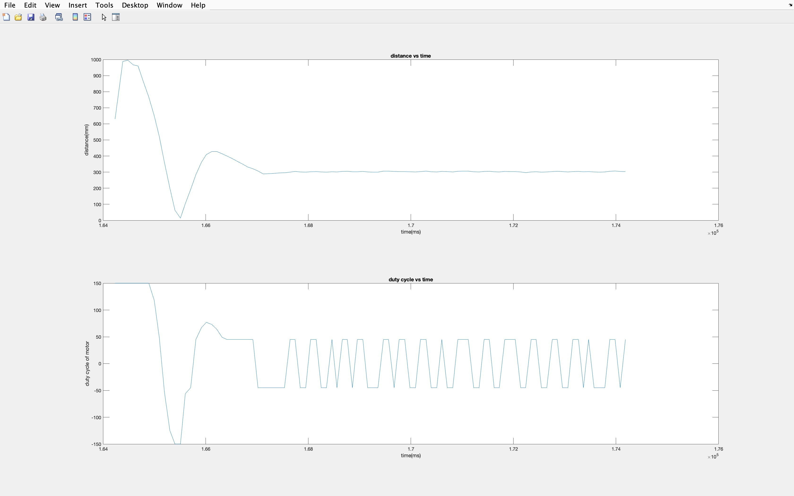
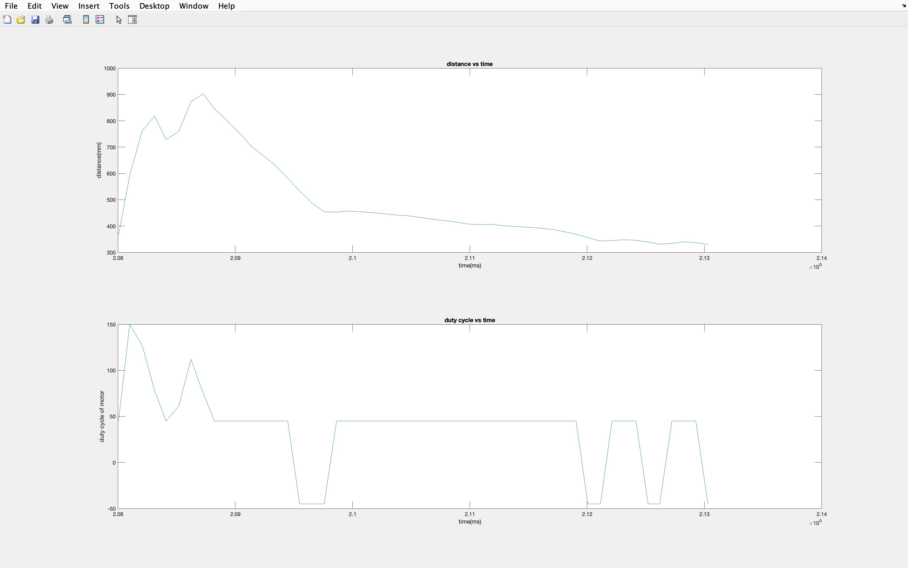

Lab 6 Report
For this lab, we piggy backed on lab 4 and 5 to finish the prelab for a degbugging tool.
And also implemented a PID controller for the robot to stop 30 cm in front of a wall.
Pre Lab
For this part, I actually used the old code from Lab4 while we were trying to get the speed of the robot.
But I made it more tidy and put it under a case.
And this time I setup an array to collect. And a method to alter the GGAT characteristics through out the array.
So at the python side using notify, it will update all the data at once. I was trying to write all data into an array of
strings. Inspired by Tongqing, I just store all the int data in an array and later update the string characteristic accordingly,
I think that svaed me some processing power. Code used below.
case GET_PID_DATA:
for(int i = 0; i < data_i; i++){
tx_estring_value.clear();
tx_estring_value.append("[");
tx_estring_value.append(data_PID[i][0]);
tx_estring_value.append(",");
tx_estring_value.append(data_PID[i][1]);
tx_estring_value.append(",");
tx_estring_value.append(data_PID[i][2]);
tx_estring_value.append("]");
tx_characteristic_string.writeValue(tx_estring_value.c_str());
}
stri = []
def data_hdl(uuid,strii):
stri.append(ble.bytearray_to_string(strii))
print(stri[-1])
ble.start_notify(ble.uuid['LAB_STR'], data_hdl)
ble.send_command(CMD.GET_PID_DATA,"")
Controller implementation (PID)
For this part, I implemented the whole controller in a command casem which seems like the easieast way.
And I had to intialize a bunch of variables to track all the data needed for the PID, which is a bit
untidy, but the resulting contoller is working. For the controller, I set the active band of dutycycle
from 45 to 150. Over 150 will be lowered to 150, and lower than 45 would be 45, I didn't include a 0 control.
So the robot will always try to adjust itself near 300mm set point. 45 is the lowest duty cycle for my robot's motor
to drive, and 150 is a reasonable power ceiling for my robot not to crash into the wall too hard. Code in below.
And I can set the values of P, I, D, Max duty cycle, running time and set point distance from the command.
while (millis() - local_start < time_lim*1000){
dt = millis() - prev_t;
prev_t += dt;
x = get_tof();
err = x - dest;
I_accum += dt*I_accum*err;
pid_dc = P*err + I*I_accum + D*(err-prev_err)/dt;
prev_err = err;
data_PID[data_i][0] = (int)millis();
data_PID[data_i][1] = x;
if (pid_dc > 0) {
if (pid_dc > DC_MAX) pid_dc = DC_MAX;
else if (pid_dc < DEAD_BAND) pid_dc = DEAD_BAND;
data_PID[data_i][2] = pid_dc;
forward(pid_dc);
}
else{
pid_dc = -pid_dc;
if (pid_dc > DC_MAX) pid_dc = DC_MAX;
else if (pid_dc < DEAD_BAND) pid_dc = DEAD_BAND;
data_PID[data_i][2] = -pid_dc;
backward(pid_dc);
}
data_i += 1;
}
idle();
P = 0.1
I = 0.01
D = 50
DC_MAX = 150
time_lim = 5
dest = 300
ble.send_command(CMD.PID,str(P)+"|"+str(I)+"|"+str(D)+"|"+str(DC_MAX)+"|"+str(time_lim)+"|"+str(dest))
Result
I have tested the PID several times to adjust the PID value for the better result. Seen in below three videos.
And I have recorded the data from the last two videos, shown in Fig.1 and Fig.2.

Fig.1 Just about right data

Fig.2 Slow data
Discussion
In above PID code, I tried to do just he controls, because of the TOF ranging frequency.
The best I got is still around 100 ms for the sampling rate. But it is good enough for the robot to
do a sudden stop reverse, and try to stay at 300mm set point. And I found my dead band duty cycle to be lower
than 45/255. Though one thing need to be careful is the units and converting the PID output to a good scale
for duty cycle. Because the error is in the hundreds, so for example you need to set K_P to around the hundredth to tenth to
have a reasonable dutycycle output.
For the integrator, I do need to worry about the windup. I've set my K_I to relatively small and because the test is around 5 to
10 seconds, so the windup isn't too large, but some times I can see it overcoming the negative part in tests and keeps going forward
while it is already in range of the setpoint when I set it above 1.
For the derivative, because I am only using only one past point, and the noise in TOF, the derivative noise
can be quite noticeable. And adding a lowpass filter may help with the problem though I didn't seem to notice the effect
on my robot, from Fig1 and 2. Also you can see there isn't a kick when switching dutycycle directions. I think
it's the proportional component overpowered the derivative component in my system. But adding the derivative
component do helped my robot to reverse faster when it overshot the setpoint.
I think adding the 0 control when the error is near the setpoint can help with the final twitching of the robot.
The threshold should be around 3 to 5 from what I see my robot's behavior.
After setting the TOF integration time, I do see the robot reacts more quickly, but also increases the final twitching
when near the setpoint. I think using a value around 8 is good enough of tradeoff for accuracy.